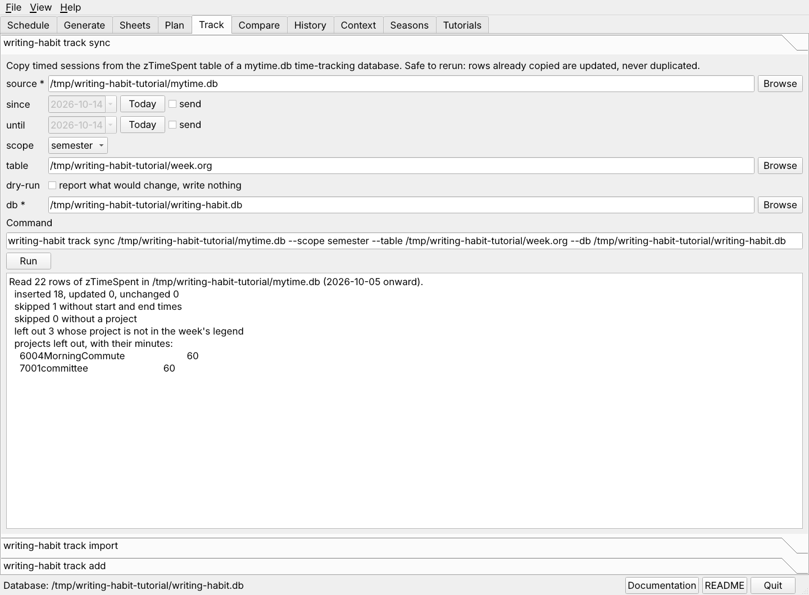

Your time tracker, mytime.db, logs each block of work in its
zTimeSpent table. track sync copies those rows into the
writing-habit database, where they become sessions. It can be run as often as
you like. A row it has already copied is updated when you edit it, and it is
never copied twice.

The Track tab after a sync of the practice week. The report says what was copied and what was left out.
mytime.db with Browse. The tab remembers it.After the first run, two items of the File menu do this with no form.
writing-habit track sync ~/6003TimeTracking/cb/mytime.db \
--db ~/org/writing-habit.db --dry-run
writing-habit track sync ~/6003TimeTracking/cb/mytime.db --db ~/org/writing-habit.db
With the shell function from Start here, the same runs are
whsync --dry-run whsync whsync --since 2026-10-05 --until 2026-10-11
| Tracker column | Becomes |
|---|---|
| ProjectID, or the digits that start ProjectDirectory | The legend code whose project starts with the same four digits, in the legend of that week's table |
| Start and End | The session's times and minutes. A block that ends after midnight still counts. |
| Activity | g is generative, e or r is editing, s is support. An empty activity takes the activity of the planned block it overlaps. |
| Description | The session's note |
The scope field decides which projects count. semester, the default, keeps the week's legend and the current semester list. legend keeps only the week's legend. all keeps every project, which gives the full picture of a week.
Choose track import on the Track tab. The CSV columns are
date, start, end, minutes, project_code, category, note.
writing-habit track import actuals.csv --format csv --db ~/org/writing-habit.db writing-habit track import week.ics --format ics --db ~/org/writing-habit.db
Choose track add, then give the day, the project code, and either the minutes or a start and an end.
writing-habit track add --day 2026-10-12 --project A --minutes 75 \
--category generative --db ~/org/writing-habit.db
Next, track project progress.